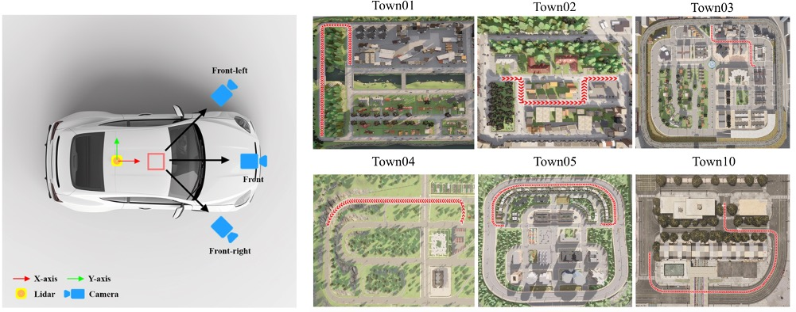
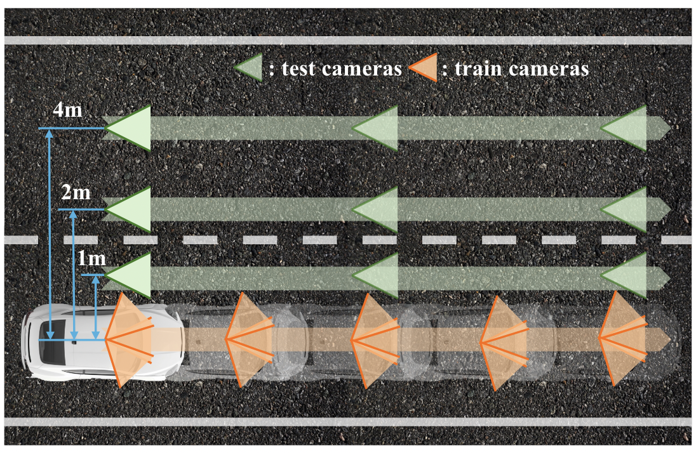
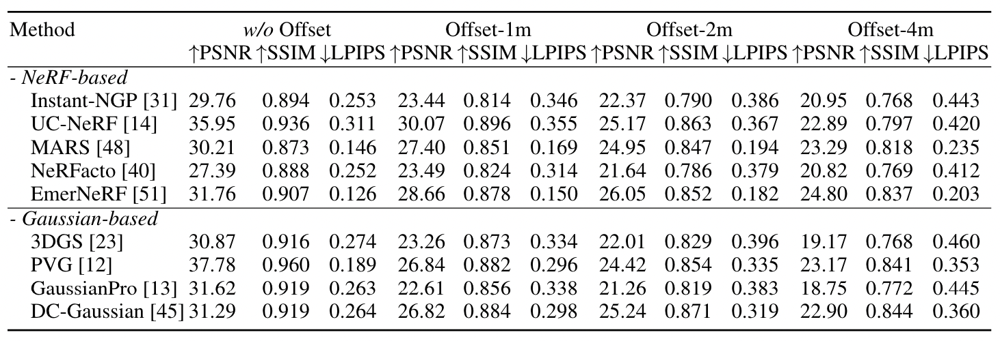

XLD: A Cross-Lane Dataset for Benchmarking Novel Driving View Synthesis
arXiv
- Hao Li1,2
- Ming Yuan
- Yan Zhang2
- Chenming Wu2
- Chen Zhao2
- Chunyu Song2
- Haocheng Feng2
- Errui Ding2
- Dingwen Zhang1
- Jingdong Wang2

Abstract
Thoroughly testing autonomy systems is crucial in the pursuit of safe autonomous driving vehicles. It necessitates creating safety-critical scenarios that go beyond what can be safely collected from real-world data, as many of these scenarios occur infrequently on public roads. However, the evaluation of most existing NVS methods relies on sporadic sampling of image frames from the training data, comparing the rendered images with ground truth images using metrics. Unfortunately, this evaluation protocol falls short of meeting the actual requirements in closed-loop simulations. Specifically, the true application demands the capability to render novel views that extend beyond the original trajectory (such as cross-lane views), which are challenging to capture in the real world. To address this, this paper presents a novel driving view synthesis dataset and benchmark specifically designed for autonomous driving simulations. This dataset is unique as it includes testing images captured by deviating from the training trajectory by 1-4 meters. It comprises six sequences encompassing various time and weather conditions. Each sequence contains 450 training images, 150 testing images, and their corresponding camera poses and intrinsic parameters. Leveraging this novel dataset, we establish the first realistic benchmark for evaluating existing NVS approaches under front-only and multi-camera settings. The experimental findings underscore the significant gap that exists in current approaches, revealing their inadequate ability to fulfill the demanding prerequisites of cross-lane or closed-loop simulation.
Motivation

The true application demands the capability to render novel views that extend beyond the original trajectory (such as cross-lane views), which are challenging to capture in the real world. Our dataset and benchmark focus on assessing the NVS capability specifically for cameras in cross-lane scenes. The primary objective is to evaluate the performance of cameras in generating accurate and realistic novel views in scenarios involving multiple lanes.
Sensor Setup and Scenes

Three cameras and one LiDAR and their setups in our data generation. Our datasets encompass six distinct scenes, where each scene involves the vehicle following an on-road trajectory. To generate training data for the cameras and LiDAR sensor, we sample $150$ waypoints along each trajectory. The trajectory is visually emphasized using the color red.
Offset-based Evaluation

The composition of our training set and testing set. The training set consists of three RGB cameras ('front', 'left-front', 'right-front') mounted on our vehicle lane. For the test set, we sample image sequences along trajectories that run parallel to the vehicle's route. This encompasses four distinct test trajectories, each offset from the vehicle's trajectory by 0 meters, 1 meter, 2 meters, and 4 meters, respectively. The sampling interval for the test set is five times the sampling interval used for the training set.
Benchmark Result

Visualization - EmerNeRF
Visualization - PVG
Visualization - GaussianPro
Visualization - UC-NeRF
Visualization - DC-Gaussian
Dataset Download
Our dataset is provided in COLMAP format. Please refer to COLMAP for more details about the dataset format.
Download link: BaiduYun (password: f7vw), OneDrive.
Format:
# Data Preprocess 1. Unzip the compressed files (e.g. `carla_pic_0603_Town**.zip`). 2. Download `intrinscis.zip` and `extrinsics.zip` from data link and unzip them. 3. Then move `intrinscis` and `extrinsics` to the corresponding folder. cp -r intrinsics data/carla_pic_0603_Town01 cp -r extrinsics data/carla_pic_0603_Town01 cp -r intrinsics data/carla_pic_0603_Town02 cp -r extrinsics data/carla_pic_0603_Town02 cp -r intrinsics data/carla_pic_0603_Town03 cp -r extrinsics data/carla_pic_0603_Town03 cp -r intrinsics data/carla_pic_0603_Town04 cp -r extrinsics data/carla_pic_0603_Town04 cp -r intrinsics data/carla_pic_0603_Town05 cp -r extrinsics data/carla_pic_0603_Town05 cp -r intrinsics data/carla_pic_0603_Town10 cp -r extrinsics data/carla_pic_0603_Town10 The data tree should look like this: generate_offset_0_test.py rename.py convert_XLD_transforms.py data ├── carlc_pic_0603_Town0N ├────────────|─────────── intrinsics ├────────────|─────────────── | ───────── 0.txt ├────────────|─────────────── | ───────── 1.txt ├────────────|─────────────── | ───────── 2.txt ├────────────|─────────── extrinsics ├────────────|─────────────── | ───────── 0.txt ├────────────|─────────────── | ───────── 1.txt ├────────────|─────────────── | ───────── 2.txt ├────────────|─────────── train_pic ├────────────|─────────────── | ───────── camera_extrinscs_00000N.json ├────────────|─────────────── | ───────── cameraX_0000N.png ├────────────|─────────────── | ───────── lidar_0000N.ply ├────────────|─────────── test_pic ├────────────|─────────────── | ───────── offset_left_0m (don't exist, run generate_offset_0_test.py) ├────────────|─────────────── | ─────────────── | ───────── camera_extrinscs_00000N.json ├────────────|─────────────── | ─────────────── | ───────── cameraX_0000N.png ├────────────|─────────────── | ─────────────── | ───────── lidar_0000N.ply ├────────────|─────────────── | ───────── offset_left_1m ├────────────|─────────────── | ─────────────── | ───────── camera_extrinscs_00000N.json ├────────────|─────────────── | ─────────────── | ───────── cameraX_0000N.png ├────────────|─────────────── | ─────────────── | ───────── lidar_0000N.ply ├────────────|─────────────── | ───────── offset_left_4m ├────────────|─────────────── | ─────────────── | ───────── camera_extrinscs_00000N.json ├────────────|─────────────── | ─────────────── | ───────── cameraX_0000N.png ├────────────|─────────────── | ─────────────── | ───────── lidar_0000N.ply
Citation
@article{li2024xld,
title={XLD: A Cross-Lane Dataset for Benchmarking Novel Driving View Synthesis},
author={Hao Li and Ming Yuan and Yan Zhang and Chenming Wu and Chen Zhao and Chunyu Song and Haocheng Feng and Errui Ding and Dingwen Zhang and Jingdong Wang},
journal={arXiv},
year={2024}
}The website template was adapted from Zip-NeRF, who borrowed from Michaël Gharbi and Ref-NeRF. For the comparison sliders we follow RadSplat and use img-comparison-slider.